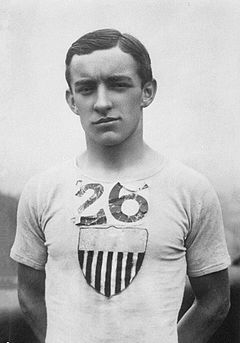

Officers
- Erin O'NeillPresident
- Joe CompagniVice President
- Kerry GillespieTreasurer
- Tim CheliusSecretary
Leadership, past presidents, Olympians, Hall of Fame members, award winners, records, and the Johnny Hayes collection are organized here for members, families, and history-minded visitors.
Current club leadership and responsibilities for Shore A.C. programs, races, teams, and operations.
Shore A.C.'s official birth year is 1934. The modern club era began in 1964, and the club now serves more than 500 members across road running, track and field, racewalking, cross country, youth, open, elite, and masters competition.

Shore A.C. preserves memorabilia donated by Johnny Hayes' daughter, Doris Hale, including trophies and the 1908 Olympic gold medal.
Johnny Hayes won the 1908 Olympic Marathon, one of the defining moments in the standardization of the modern marathon distance.
Hayes was born in New York City to Irish emigrants from Nenagh, County Tipperary. He became one of only three American men to win the Olympic Marathon, alongside Thomas Hicks and Frank Shorter.
The 1908 London Olympic route from Windsor Castle to the royal stand at White City measured 42 kilometers and 195 meters. That distance was later codified by the IAAF in 1921.
Hayes finished fifth at Boston in 1906, third at Boston in 1907, won the inaugural Yonkers Marathon, and placed second at Boston in 1908 to qualify for the Olympic Games.
He was later inducted into major halls of fame, including the National Distance Running Hall of Fame in 2008.
All listed athletes competed for Shore A.C. at one time and are considered Shore A.C. people by the club archive.
| Years | Athlete | Events |
|---|---|---|
| 1936 | John Grimek | Heavyweight weightlifting |
| 1948, 1952 | Herb McKenley | 100m, 200m, 400m, 4x400m relay |
| 1952 | Andy Stanfield | 200m |
| 1956 | Elliott Denman | 50K racewalk |
| 1960 | Bob Mimm | 20K racewalk |
| 1968 | Barbara Friedrich | Javelin throw |
| 1968 | Bill Reilly | 3000m steeplechase |
| 1968 | Maren Seidler | Shot put |
| 1968 | Dave Romansky | 50K racewalk |
| 1976, 1980 | Todd Scully | 20K racewalk |
| 1976 | Quentin Wheeler | 400m hurdles |
| 1980 | Renaldo Nehemiah | 110m hurdles |
| 1984 | Jim Wooding | Decathlon |
| 1984 | Milton Goode | High jump |
| 1988, 1992 | Andrew Valmon | 4x400m relay |
| 1992 | Charles "Chip" Jenkins Jr. | 4x400m relay |
| 1992, 1994, 1998 | John Amabile | Bobsled |
| 1996, 2000, 2004 | Curt Clausen | 20K and 50K racewalks |
| 1996 | LaMont Smith | 4x400m relay |
| 2000, 2004, 2008 | Dudley Dorival | 110m high hurdles |
| 2000, 2004, 2008 | Aliann Pompey | 400m |
| 2004 | Tora Harris | High jump |
| 2008 | Rafeeq Curry | Triple jump |
| 2012 | Aliann Pompey, Jeff Porter, Trevor Barry | 400m, 110m high hurdles, high jump |
| 2016 | Ajee Wilson, Robby Andrews | 800m, 1500m |
The club also gives special cheers to 1960 Olympian Frank Budd and recognizes Johnny Hayes and Abel Kiviat as honorary or posthumous Shore A.C. Olympians.
Inductees from the official Shore A.C. Hall of Fame archive, grouped by year.
| Year | Inductees |
|---|---|
| 2020 | Tara Harris, Gene Harlton, Justin Frick, John Kalnas, Silvia Galaraza |
| 2019 | Panse Geer, Gene Geer, Frank Harrison, Kerry Gillespie |
| 2018 | Tony Plaster, John Soucheck, Seiferd, Heizman |
| 2017 | Kenny Brown, Nancy Jones, Larry Jones, Keith McQuitter |
| 2016 | Marcia Shapiro, Avram Shapiro, J.L. Seymour |
| 2015 | Andrew Valmon, Charles "Chip" Jenkins Jr., Kim Kryszcnski, Adam Sarafian |
| 2013 | Barry Krammes, Charles Silcock, Phil Shinnick, The Merli Family |
| 2012 | Isabel Keeley Meldrum, Jack Rudin, Carlton Huff, Mel Ullmeyer |
| 2011 | Bob Andrews, Sherry Brosnahan, Gary Beach |
| 2010 | Oneithea "Neni" Lewis, Don and Marie Henry, Roy Madsen |
| 2009 | Dudley Dorival, Marc Anderson, Milton Goode, Curt Clausen, Ralph Garfield |
| 2008 | Donna Cetrulo, Phil Benson, Charles Rooney Sr., Charles Roll |
| 2007 | Albert Cestero Jr., Greg Foster, Gerard Langlois, Dr. Colin Beer, John Tullo, Frank Haviland |
| 2006 | Bob Carlson, John Skislak, Gary Pierce, Paul Richard |
| 2005 | Irwin Bernstein, Greg Diebold, Bill Fitzpatrick, Bill Sieben, Dawud Saleem |
| 2004 | Bill Reilly, Lou Zimmerman, Charles Valan, Phil Hinck |
| 2003 | Patricia "Pat" Barrett, John Charniga, Joe Kraus, John Fredericks |
| 2002 | Jim McGilvray, Frank Fox, Ralph Aquino, Ray Funkhouser |
| 2001 | Thomas Budd, James "Chippy" Coleman, Bill Hartley, Dave Romansky |
| 2000 | Maren Seidler, Bob Ihne, Milton "Milt" Matthews, Arthur "Art" Smith, Ken Place |
| 1998 | Bob Bazley, Mike Bersch, Vince Cartier, Vince Ruffin, John "Pat" Kilpatrick |
| 1997 | Louise "Lulu" Weschler, Alfred Richardson |
| 1996 | Dave Patterson, Hoyle Mozee |
| 1995 | Tom Baum, Sue and Gene Caffrey, Larry Bova |
| 1994 | Dave Hudson, Cliff Whithead, Wayne Rideout |
| 1993 | Leon Devero, Tom and Phyllis Fyfe, Augie Zilincar |
| 1992 | Norma Arnesen Grasso, Tim McLoone, Dr. Matthew "Matt" Brown |
| 1991 | Sanford "Sandy" Kalb, John Kuhi |
| 1990 | Bob Mimm, Jim Wooding |
| 1989 | Herb McKenley, Art Swarts, Joshua Williamson |
| 1988 | Don Johnson |
| 1987 | Dr. George Sheehan |
| 1986 | Elmore Harris, Bill Scholl |
| 1985 | Barbara Friedrich, Harry Nolan |
| 1984 | Blaine Rideout, Todd Scully |
| 1983 | John Borican, Dick Ganslen, Eulace Peacock, Elliott Denman |
Athlete of the Year honorees and retroactive award recognitions from the Shore A.C. archive.
1970 Greg Diebold; 1969 Barbara Friedrich; 1968 Maren Seidler, Bill Reilly, and Barbara Friedrich; 1967 Barbara Friedrich; 1966 John Kuhi, Bill Findler, Milt Matthews, and Bill Reilly; 1952 Herb McKenley and Andy Stanfield; 1949 Andy Stanfield, Frank Fox, Charles Slade, and Herb McKenley; 1948, 1947 Herb McKenley; 1946 and 1945 Elmore Harris; 1944 Elmore Harris; 1943 Herb McKenley and Dick Ganslen; 1942 Joshua Williamson; 1941 John Borican and Archie Harris; 1940 John Borican; 1939 Blaine Rideout; 1938 John Borican; 1937 Eulace Peacock; 1936 John Grimek; 1935 and 1934 Eulace Peacock.
Masters men indoor and outdoor relay records are available in a dedicated records archive.